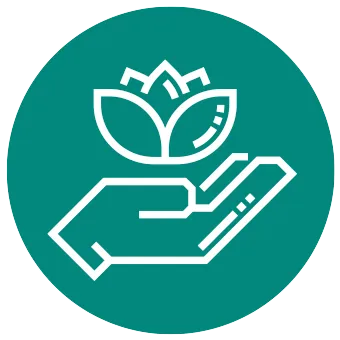
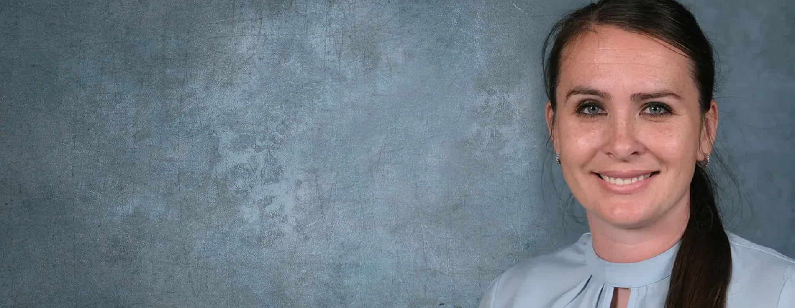
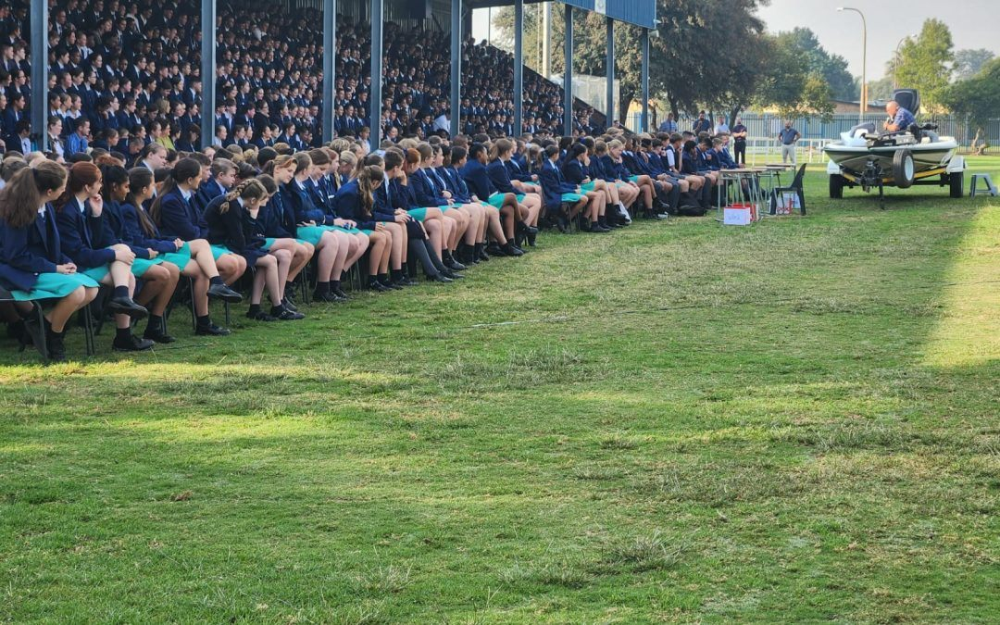
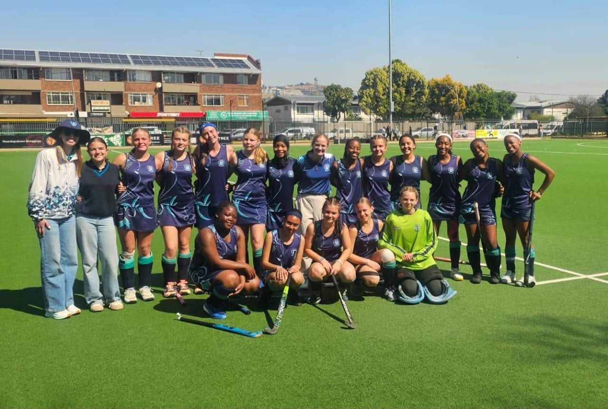
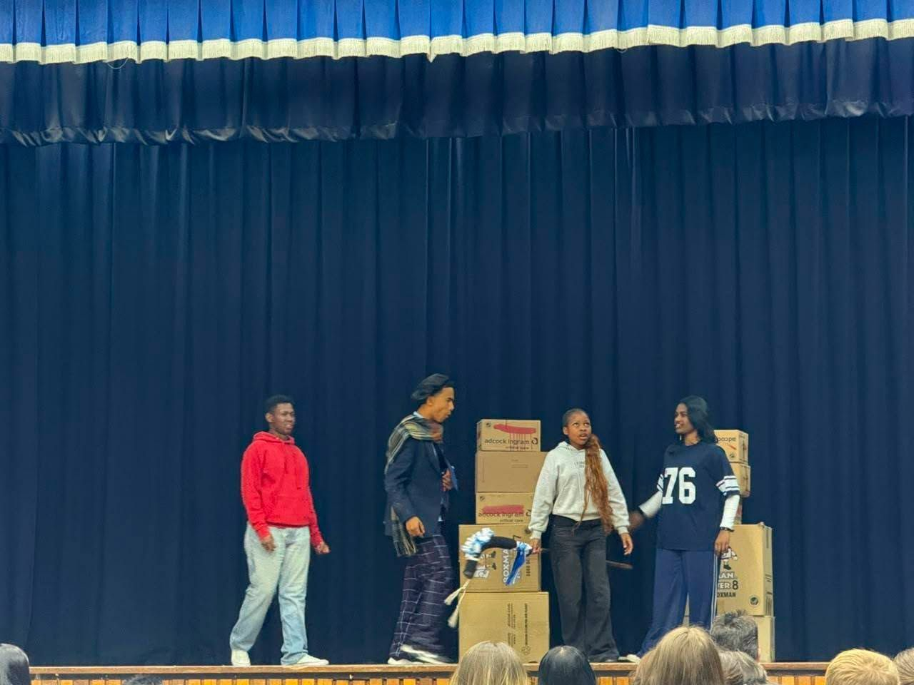
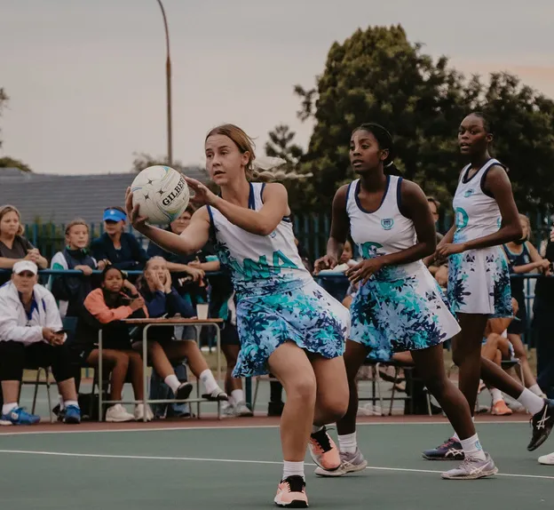

Akademie
Akademie is en sal altyd die nommer een prioriteit by Dinamika wees.
Lees meer: Akademie’n Parallelmedium-hoërskool in Brackenhurst, Alberton — waar ons leerders bemagtig vir die toekoms.
Ons skoolleuse motiveer ons om nie tevrede te wees met middelmatigheid nie, maar eerder om hoër te reik, verder te gaan, harder te probeer en altyd na uitnemendheid te mik. Ons handel nie in die donker nie, maar wandel in die lig. Ons reik na die lig by Dinamika.
Reik na die Lig
Ons visie hier by Hoërskool Dinamika is om ons leerders te bemagtig vir die toekoms.
By Hoërskool Dinamika is ons trots op ons skooltradisies, etos en toeganklikheid. Ons is ’n waardegebaseerde skool wat daartoe verbind is om bekwame, goedafgeronde, beleefde en sosiaal verantwoordelike jongmense te ontwikkel wat met selfvertroue die toekoms ingaan.
Dinamika in syfers
Ons fondasie
Ons mikpunt is dat ons leerders in Hoërskool Dinamika sal floreer, en om hulle te help om hul eie potensiaal te bereik.
Akademie is en sal altyd die nommer een prioriteit by Dinamika wees.
Lees meer: Akademie’n Meriete- en demerietestelsel gebou op verhoudings, insentiewe en gevolge.
Lees meer: DissiplineUitnemendheid, trots, respek en insluiting rig alles wat ons doen.
Lees meer: Christelike Waardes
Sport, kultuur en sosiale geleenthede ontwikkel die kind in totaliteit.
Lees meer: Holistiese OntwikkelingBoodskap van die hoof
Hoërskool Dinamika het ontstaan nadat Hoërskool Palmietfontein en Hoërskool Die Varing in Oktober 1993 saamgesmelt het. In skoolterme is Dinamika ’n relatief jong skool — ’n jong, dinamiese skool met ’n groeiende tradisie, gebou deur passievolle personeel, talentvolle leerders, ondersteunende ouers en die gemeenskap.
Die onderskeidende faktor is dat elke leerder op alle terreine blootgestel word aan die beste infrastruktuur, spesialis-onderwysers en -afrigters, en geleenthede om op die hoogste vlak te kompeteer.

Akademie is die hartklop van Dinamika. Hier word elke leerder die geleentheid gegun, met al die nodige hulpbronne, om tot die beste van sy of haar potensiaal te presteer.

Ons is 100% oortuig daarvan dat liefdevolle verhoudings die enigste manier is om ’n kind werklik te vorm, te beïnvloed en te leer.
Nuus & gebeure

Hoërskool Dinamika het die tweede kwartaal begin met ’n saalopening wat mnr. Van der Schyff aangebied het.
Openbare skole — soos deur die Departement van Basiese Onderwys gepubliseer.
Meer as die klaskamer

Sport blaas sosiale en kulturele lewe in ’n skool in, vestig ’n gemeenskap en skep lewenslange verbintenisse tussen leerders.
Ontdek ons sport
Elke leerder kry die kans om sy of haar potensiaal op die verhoog te ontdek en te skitter.
Ontdek ons kultuurFotogalery

Toekomstige Namies
Graad 8-aansoeke word aanlyn by die Gauteng Departement van Onderwys gedoen. Vir interne plasings in graad 9 tot 12 kan u ’n aansoekvorm by die skoolkantoor afhaal.